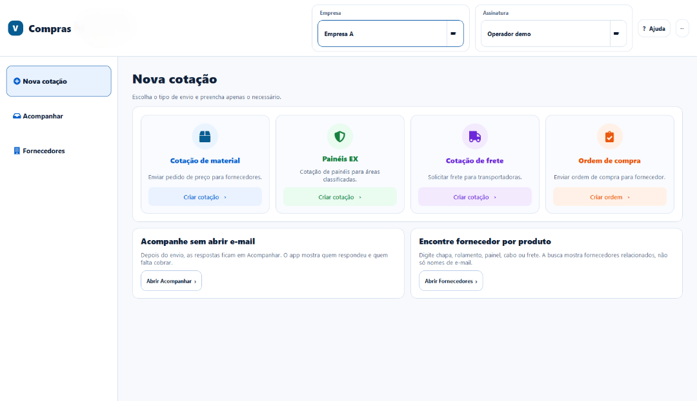
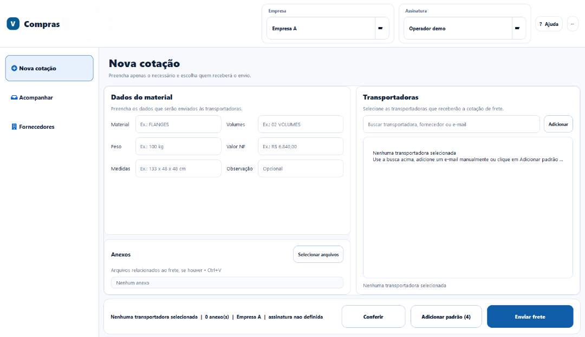
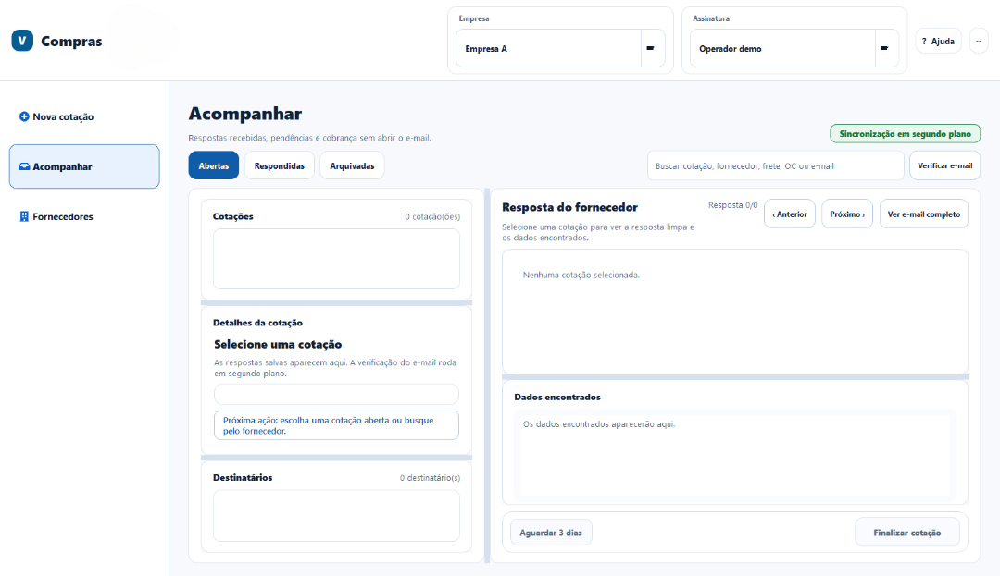

O problema
Fornecedores, pedidos, anexos e respostas ficavam espalhados entre planilhas, e-mails e mensagens. Era difícil localizar um contato e saber quem já havia respondido.
COMPRAS · FORNECEDORES · COTAÇÕES
USO INTERNODa solicitação ao acompanhamento das respostas
Desenvolvi uma aplicação desktop para organizar pedidos de compra, cotações e respostas de fornecedores. Em vez de acompanhar cada etapa em planilhas e e-mails separados, a equipe trabalha no mesmo fluxo, do pedido ao retorno.

NA ROTINA


Fornecedores, pedidos, anexos e respostas ficavam espalhados entre planilhas, e-mails e mensagens. Era difícil localizar um contato e saber quem já havia respondido.
Criei uma aplicação Windows para buscar fornecedores, preparar solicitações e ordens de compra, revisar o envio e acompanhar as respostas recebidas.
A pessoa escolhe o tipo de pedido, completa as informações necessárias, confere destinatários e anexos e só então envia. Depois, o sistema organiza as respostas e indica o que ainda precisa de atenção.
A ferramenta apoia a rotina do setor de compras sempre que surge a necessidade de cotar com fornecedores.
O pedido, o envio e o retorno ficam conectados. A equipe gasta menos tempo alternando entre arquivos e mensagens e consegue retomar o acompanhamento com mais clareza.
O aplicativo precisa lidar com respostas que chegam depois e com falhas temporárias de e-mail. Por isso, inclui histórico local e uma fila que permite retomar envios com cuidado.
Tecnologias
Python · PySide6 · SQLite · IMAP/SMTP · Excel · Windows.
Demonstração pública
As telas usam dados fictícios. Envios e sincronização de rede ficam desativados nesta versão; nenhum fornecedor ou documento da empresa é publicado.
Desenvolvi a ferramenta a partir da rotina de compras e acompanho sua evolução com as pessoas que a utilizam.